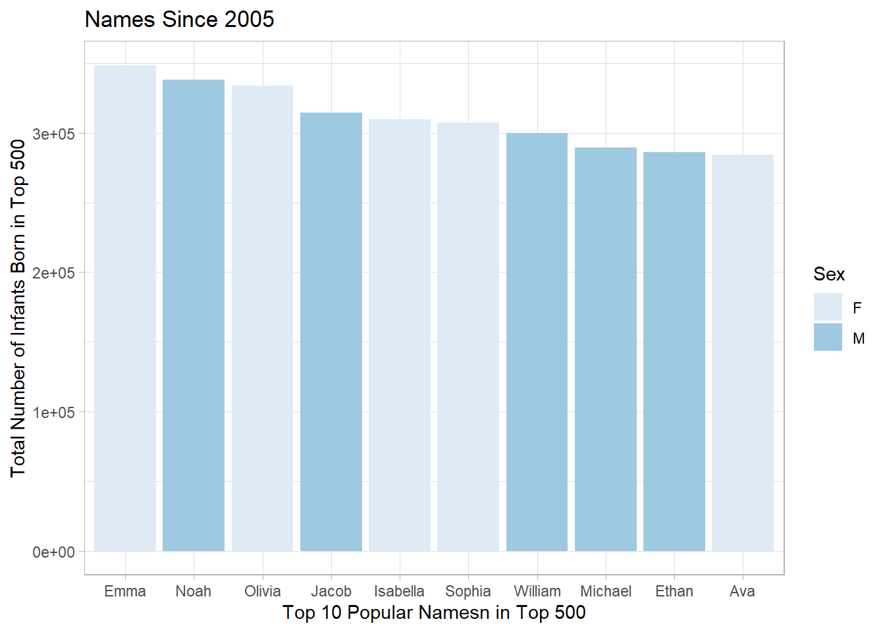

Warning: package 'tidyverse' was built under R version 4.3.3
Warning: package 'ggplot2' was built under R version 4.3.3
Warning: package 'tibble' was built under R version 4.3.3
Warning: package 'tidyr' was built under R version 4.3.3
Warning: package 'readr' was built under R version 4.3.3
Warning: package 'purrr' was built under R version 4.3.3
Warning: package 'dplyr' was built under R version 4.3.3
Warning: package 'stringr' was built under R version 4.3.3
Warning: package 'forcats' was built under R version 4.3.3
Warning: package 'lubridate' was built under R version 4.3.3
── Attaching core tidyverse packages ──────────────────────── tidyverse 2.0.0 ──
✔ dplyr 1.1.4 ✔ readr 2.1.5
✔ forcats 1.0.0 ✔ stringr 1.5.1
✔ ggplot2 3.5.1 ✔ tibble 3.2.1
✔ lubridate 1.9.4 ✔ tidyr 1.3.1
✔ purrr 1.0.4
── Conflicts ────────────────────────────────────────── tidyverse_conflicts() ──
✖ dplyr::filter() masks stats::filter()
✖ dplyr::lag() masks stats::lag()
ℹ Use the conflicted package (<http://conflicted.r-lib.org/>) to force all conflicts to become errors
babynames <-read_csv("data/babynames_500.csv")
Rows: 144000 Columns: 7
── Column specification ────────────────────────────────────────────────────────
Delimiter: ","
chr (2): name, sex
dbl (5): n, year, proportion, rank, prop
ℹ Use `spec()` to retrieve the full column specification for this data.
ℹ Specify the column types or set `show_col_types = FALSE` to quiet this message.
babynames |>filter(name =="Judith", sex =="F") |>summarize(total =sum(n))
# A tibble: 1 × 1
total
<dbl>
1 441924
dplyr - group_by()
NOTE The group_by() function is never used alone. It is always used before either summarize() or mutate() to communicate to those functions how to perform thier calculations.
# A tibble: 2 × 2
sex total
<chr> <dbl>
1 F 147043618
2 M 163865724
Your Turn 2
Use group_by(), summarise(), and arrange() to display the ten most popular names. Compute popularity as the total number of children of a single gender given a name.
(Hint: Be sure to remove each _ before running the code)
`summarise()` has grouped output by 'name'. You can override using the
`.groups` argument.
top_10 |>ggplot(mapping=aes(x=fct_reorder(name, desc(total)),y=total,fill=sex))+geom_col()+scale_fill_brewer()+theme_light()+labs(x="Top 10 Popular Namesn in Top 500",y="Total Number of Infants Born in Top 500",fill="Sex",title="Names Since 2005")

Go ahead and add one the ggplot code to make the visualization.
dplyr - mutate()
Use mutate() to create NEW columns/variables within your data set.
# A tibble: 144,000 × 8
name sex n year percent proportion rank prop
<chr> <chr> <dbl> <dbl> <dbl> <dbl> <dbl> <dbl>
1 Linda F 99693 1947 6.17 0.0562 1 0.0617
2 Linda F 96215 1948 6.23 0.0567 1 0.0623
3 James M 94761 1947 5.46 0.0518 1 0.0546
4 Michael M 92777 1957 4.53 0.0430 1 0.0453
5 Robert M 91654 1947 5.28 0.0501 2 0.0528
6 Linda F 91017 1949 5.85 0.0532 1 0.0585
7 Michael M 90693 1956 4.52 0.0429 1 0.0452
8 Michael M 90614 1958 4.5 0.0427 1 0.0450
9 James M 88604 1948 5.32 0.0505 1 0.0532
10 Michael M 88563 1954 4.57 0.0434 1 0.0457
# ℹ 143,990 more rows
# A tibble: 144,000 × 9
name sex n year percent nper proportion rank prop
<chr> <chr> <dbl> <dbl> <dbl> <dbl> <dbl> <dbl> <dbl>
1 Linda F 99693 1947 6.17 6 0.0562 1 0.0617
2 Linda F 96215 1948 6.23 6 0.0567 1 0.0623
3 James M 94761 1947 5.46 5 0.0518 1 0.0546
4 Michael M 92777 1957 4.53 5 0.0430 1 0.0453
5 Robert M 91654 1947 5.28 5 0.0501 2 0.0528
6 Linda F 91017 1949 5.85 6 0.0532 1 0.0585
7 Michael M 90693 1956 4.52 5 0.0429 1 0.0452
8 Michael M 90614 1958 4.5 4 0.0427 1 0.0450
9 James M 88604 1948 5.32 5 0.0505 1 0.0532
10 Michael M 88563 1954 4.57 5 0.0434 1 0.0457
# ℹ 143,990 more rows
Your Turn 3
Fill in the blanks to: Rank each name within its year and sex.
(Hint: Be sure to remove each _ before running the code)
# A tibble: 144,000 × 5
# Groups: year, sex [288]
name year sex prop rank
<chr> <dbl> <chr> <dbl> <int>
1 Mary 1880 F 0.0805 1
2 Anna 1880 F 0.0297 2
3 Emma 1880 F 0.0228 3
4 Elizabeth 1880 F 0.0221 4
5 Minnie 1880 F 0.0199 5
6 Margaret 1880 F 0.0180 6
7 Ida 1880 F 0.0168 7
8 Alice 1880 F 0.0161 8
9 Bertha 1880 F 0.0150 9
10 Sarah 1880 F 0.0147 10
# ℹ 143,990 more rows